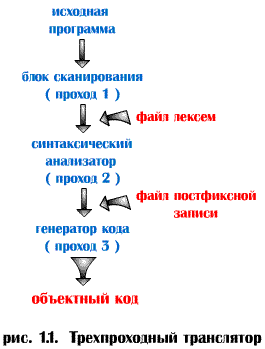

Трехпроходный транслятор.

Блок сканирования считывает исходную программу и
представляет ее в форме файла лексем. Синтаксический анализатор читает этот
файл и выдает новое представление программы, например, в
постфиксной форме.
Наконец, этот файл считывается генератором кода, который создает объектный
код программы.
Компилятор такого вида называется трехпроходным (рис. 1.1),
так как программа считывается трижды (исходный текст программы, файл лексем
и файл в постфиксной форме).
Недостаток :
Невысокая скорость выполнения, так как в большинстве вычислительных
систем операции, связанные с обращением к файлам, осуществляются
сравнительно медленно.
Преимущества :
Относительная независимость каждой фазы компилирования. Так как
связь между обрабатывающими блоками осуществляется только через файлы
данных, любой проход может быть реализован независимо от остальных. Это
обеспечивает :
1. Возможность автономной
разработки различных блоков компилятора разными разработчиками, необходимо
только согласовать форматы промежуточных файлов.
2. Гибкость компилятора. Например,
для реализации одного и того же языка для различных типов компьютеров,
возможно использовать одни и те же блоки сканирования и синтаксического
анализа, но написать специальные генераторы кода для каждого типа
компьютера. При реализации семейства компиляторов с различных языков для
одного типа компьютеров, очевидно, потребуются различные блоки сканирования
и синтаксического анализа, но возможно использование общего генератора кода.
3. Минимальные
требования к объему оперативной памяти (модули различных фаз компиляции
можно загружать по очереди, выгружая при этом предыдущий).
Для
достижения высокой скорости компиляции применяется компилятор с
однопроходной структурой.
Для повышения
эффективности выполнения объектной программы в процесс компилирования может
включаться фаза оптимизации. Блок оптимизации легко
встраивается в трехпроходный компилятор, где размещается, обычно, между
синтаксическим анализатором и генератором кода. На этой фазе постфиксный
файл используется в качестве входных данных и создается новый файл,
содержащий постфиксную запись эквивалентной программы с улучшенными
характеристиками. Поскольку блок оптимизации записывает свои входные данные
в формате постфиксного файла, генератор кода не нуждается в изменении. На
практике возможность оптимизации предусматривается по желанию пользователя:
если необходимо, чтобы время компилирования было небольшим, блок
оптимизации игнорируется; если же требуется
получить программу с высокой скоростью выполнения, то после работы
синтаксического анализатора вызывается блок оптимизации.